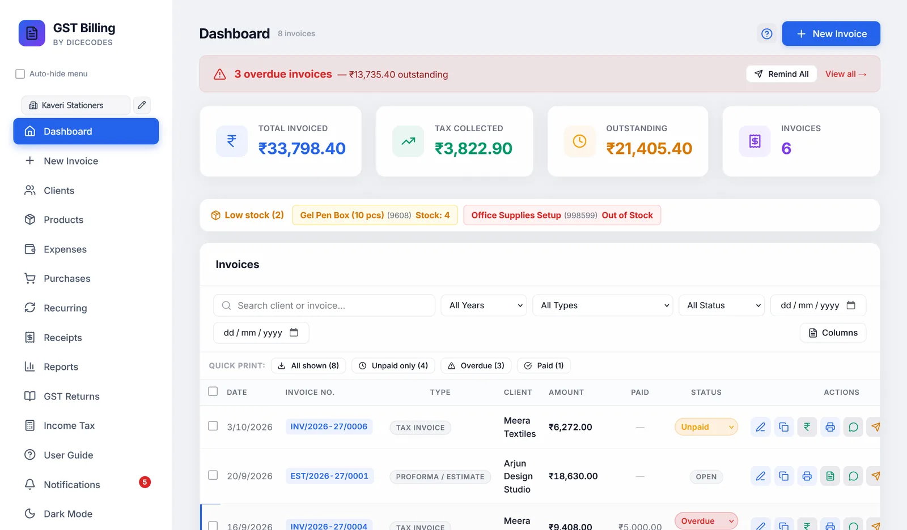
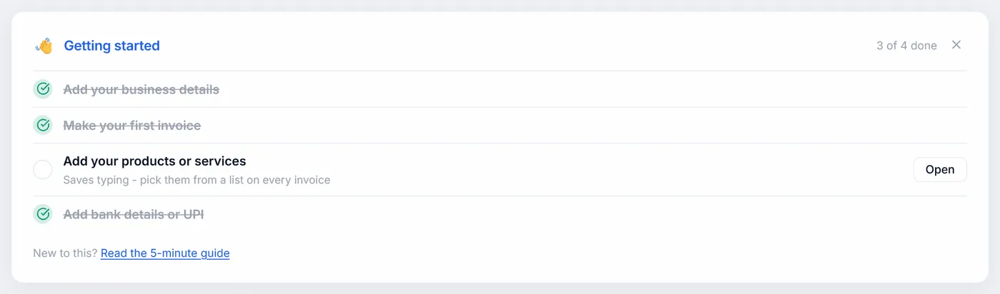
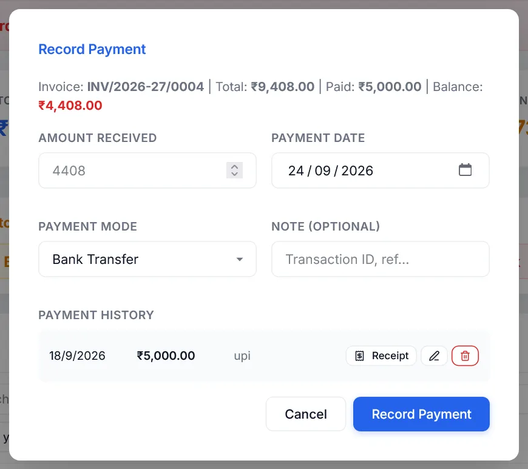

Dashboard
Your invoices at a glance: what you have sold, what you are owed, what is overdue, and every action you can take on an invoice.
#At the top
The count beside the title is every document for the business selected in the sidebar, including estimates, challans and cancelled invoices. New Invoice starts a blank invoice, and CSV import / export brings in or saves many invoices at once (see below). When a PIN is set, Lock locks the app straight away.

#The Getting started list
New installs show four steps. Each ticks itself off once you have really done it, and has a button that takes you there:
| Step | Done when | Button |
|---|---|---|
| Add your business details | A business name is saved | Open Settings |
| Make your first invoice | Any invoice exists | Start |
| Add your products or services | At least one product is saved | Open |
| Add bank details or UPI | A bank account or UPI ID is saved | Open Settings |
It disappears when all four are done, or when you close it with ✕. Read the 5-minute guide opens this documentation in your browser.

#The support card
Once you have made 10 invoices, a small card at the top asks, once a day, whether you would like to support the app, with how much users have given so far. Support with UPI opens Support & About. Not today hides it until tomorrow and Hide for 30 days for a month. It never blocks your work and is never printed on an invoice.
#Overdue invoices and reminders
When any invoice is overdue, a red banner shows how many and how much is outstanding. Click the banner to show only overdue invoices.
Remind All lists each overdue invoice with the client, amount and phone number. Remind opens WhatsApp with a polite reminder already written, such as "Invoice INV/0012 for ₹11,800 was due on 5 Sep 2026. Kindly arrange the payment…".
#The four totals
| Total Invoiced | The total of your sales, including GST |
| Tax Collected | The GST on those sales |
| Outstanding | What clients still owe on unpaid and part-paid invoices |
| Invoices | How many sales documents there are |
They cover only the selected business and only real sales. Tax invoices, bills of supply and composition bills count. Credit notes are subtracted. Proforma estimates, delivery challans and cancelled invoices are left out. Foreign-currency sales are shown on their own line, never added to rupees.
#Low stock
If alerts are on in Settings, products at or below your threshold scroll past under Low stock, like a news ticker, with Out of Stock in red or the number left in amber. Point at it to stop it; click one to open Products.
#Finding an invoice
| Search | By client name or invoice number |
| Financial year | All years, or one of the last five |
| Type | Any of the six document types |
| Status | Unpaid, Partial, Paid, Overdue or Cancelled |
| From / To | A range of invoice dates |
✕ clears all filters at once.
#Choosing the columns
Columns lets you show or hide: Date, Invoice #, Type, Client, Amount, Currency, Status, Due date, Print count and Actions. Currency, due date and print count are hidden to start. The Paid column is always shown. Your choice is remembered.
A yellow note icon next to a client means the invoice has a private note. Point at it to read it.
#Status
Each invoice is Unpaid, Partial, Paid, Overdue or Cancelled. Recording payments sets it for you. Each time the Dashboard opens, unpaid and part-paid invoices past their due date become Overdue, and the row shows how many days late they are.
You can also change it from the dropdown on the row. Choosing Paid records a payment for the rest of the balance, so your payment history stays complete.
Choosing Unpaid on a paid invoice takes back the payment that marking it Paid recorded, so the Paid column clears and Send reminder comes back. Payments you recorded yourself stay; delete them under Payment History if they were wrong.
Only sales get paid, so only Tax Invoices, Bills of Supply and Composition bills have this dropdown. Quotations, proformas and delivery challans show Open, or Converted once turned into an invoice; credit notes show Issued. A cancelled one shows Cancelled; Undo cancel is with its actions.
#Recording a payment
- Open itClick the ₹ Payment button on the invoice. The top line shows the total, what is paid, and the balance.
- Fill it inEnter Amount Received, the Payment Date (today to start), the Payment Mode (Bank Transfer, UPI, Cash, Cheque, Card or Other), and a note such as the transaction ID.
- Record itClick Record Payment. The status becomes Partial or Paid, and a printable receipt opens.
A cancelled invoice cannot take a payment; change its status back first.
If the amount is more than the balance, you are asked whether to record it as an overpayment. The extra is kept as the client's credit, to use on their next invoice.
Under Payment History, each payment has Receipt to reprint it, a pencil to edit it, and a bin to delete it. The status is worked out again after any change.

#The payment receipt
It shows your business details, PAYMENT RECEIPT, the receipt number, date, invoice, payment mode and note, "Received with thanks from" the client, the amount (in words for rupees), the invoice total, total paid and balance, and signature lines. Print Receipt prints it on A5.
#What you can do with an invoice
The row shows the actions you use most. The rest are in the ⋯ menu at the end of the row; it closes with Esc or a click elsewhere.
| 👁 View | Shows the invoice exactly as it prints, without opening the editor. Print prints it, Esc closes it. The slider at the bottom zooms the preview from 30% to 250% (− and + step 10%); click the percentage to go back to the normal size. Zoom only changes the preview; the print is always full size. |
| Edit | Opens it on the invoice screen. |
| Duplicate | A new invoice with the same client and items, a new number and today's date. It starts Unpaid, with no payments. |
| Prints the invoice straight away, without opening it, then returns to the Dashboard. | |
| Convert to Tax Invoice | Quotations, proformas and delivery challans only, until they have been converted. See Turning a quote into an invoice. |
| ₹ Payment | Record a payment, as above. |
| On a phone, attaches the PDF through your phone's share menu. On a computer, WhatsApp does not let websites attach files, so the chat with the client opens (using the phone number saved for them) with the invoice details, and the PDF is downloaded for you to drag into the chat. | |
| Send reminder | Shown for unpaid, part-paid and overdue invoices. Opens WhatsApp with a reminder suited to the situation. |
| Opens your email program with the subject and a short message. Add the address and attach the PDF yourself. | |
| Cancel | See Cancelling an invoice. |
A cancelled invoice keeps only View, Duplicate and Undo cancel. A quotation, proforma or challan already converted keeps only View and Duplicate, so it cannot be changed or converted twice. Opened, either one is read-only: you can download or print it, not change it. Payments they already have stay viewable from the ₹ button.
#Cancelling an invoice
Cancel asks first, then marks the invoice cancelled. It keeps its number, which GST requires, but no longer counts in totals, reports or GST returns, and any stock it used goes back. If you saved or printed its PDF, the copy in the Saved Invoices folder gets CANCELLED across every page.
To undo it, click the Undo cancel arrow among the row's actions and answer Yes, undo. It goes back to Unpaid, Partial or Paid, from its payments, the stock is taken out again, and its saved PDF is put back exactly as it was. A cancelled invoice is never shown as overdue.
#Importing and exporting invoices as CSV
For moving invoices in from Excel, Tally or another program, or out to your CA.
- Open itClick CSV import / export at the top of the Dashboard.
- Start from the templateTemplate downloads a CSV with the right columns and an example. Fill it in with Excel or Google Sheets and save it as CSV. Export all as CSV gives what you already have, in the same columns.
- Choose the fileChoose CSV file shows what will happen before anything is saved: how many are ready, which already exist and are skipped, and every row with a problem (a bad date, a missing rate). Rows with problems are not imported; fix the file and choose it again.
- ImportClick Import. A message says how many were imported and skipped.
One row per item. Rows with the same invoice number make one invoice; give the client, date and other invoice details on the first row (later rows may leave them blank). Column names are matched loosely, so Qty or Quantity, GSTIN or Client GSTIN both work. Dates can be 2026-10-01, 01-10-2026 or 01/10/2026 (day first).
| Column | What to put |
|---|---|
| Invoice Number, Invoice Date | Required. |
| Invoice Type | Tax Invoice (if blank), Bill of Supply, Composition, Quotation, Proforma, Delivery Challan or Credit Note. |
| Due Date | Optional. |
| Client Name, Client GSTIN, Client State, Client Address, Client Country | The name is required. A client already in Clients fills in the rest. The state can be a name, a 2-digit code, or left to the GSTIN. |
| Place of Supply | Only if it differs from the client's state. |
| Item Name, HSN/SAC, Quantity, Unit, Rate | Rate is required. A product of the same name fills in a missing HSN or unit. |
| Discount | Rupees off that line. |
| GST %, Cess % | Such as 18 and 0. |
| Prices Include Tax | Yes if the rates already include GST. |
| Notes | Printed on the invoice. |
| Bill Discount, Round Off | For the whole invoice: rupees off after tax, and Yes to round the total to the rupee. |
GST, CGST + SGST or IGST and the totals are worked out exactly as on the invoice screen. An invoice number that already exists is skipped, never overwritten. Two different invoices with the same number (for example, numbering that restarts each year) are refused: give one of them its own number.
Two choices before importing: Add new clients to Clients, and Take sold quantities out of product stock. Leave stock off when importing old invoices whose stock you have already counted.
#Printing many invoices as one PDF
The Quick print buttons combine invoices from the list as it is currently filtered into one PDF, one invoice per page:
- All shown: every invoice in the list
- Unpaid: only those marked Unpaid, not part-paid or overdue
- Overdue and Paid
For more than five invoices, a message shows how far it has got. For more than 100, you are asked first.
#Ticking several invoices
Tick the box on each row, or the box in the header for every visible row. A bar appears with:
| Mark paid, Mark unpaid, Mark overdue | Change them all, after asking. Mark paid records a payment for each balance. |
| Export JSON | Saves the ticked invoices to a file, which can be imported as a backup. |
| Bulk PDF | Combines the ticked invoices into one PDF, useful for your CA or for filing. Cancel stops it part-way and keeps what is done. |
| Cancel invoices | Cancels the ticked invoices, after asking, and puts their stock back. Marking cancelled invoices as anything else brings them back and takes the stock out again. |
Ticks stay when you change the filters, so check the count before acting.